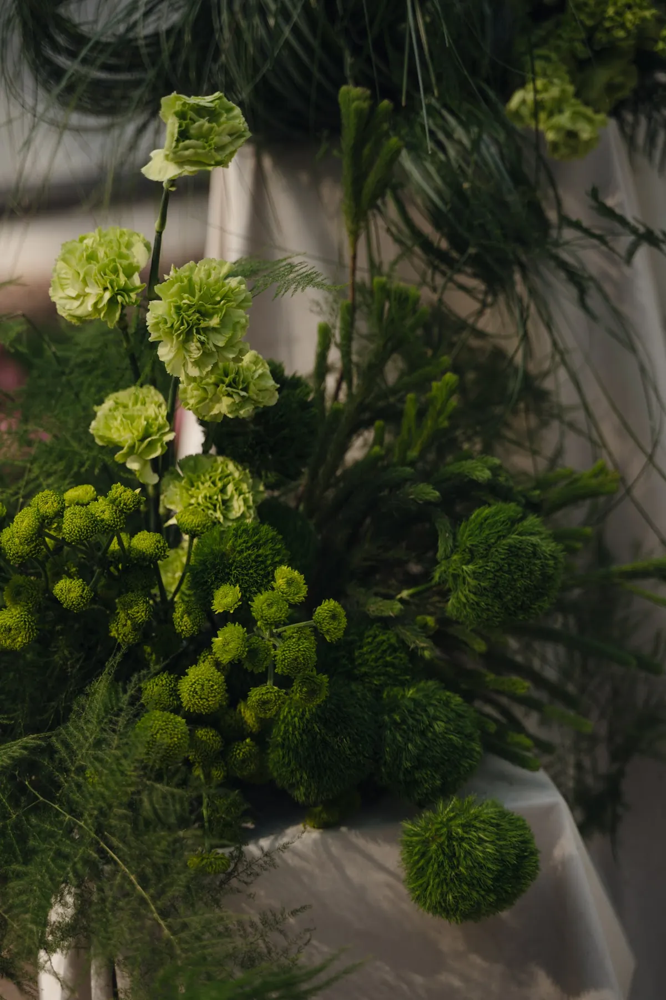
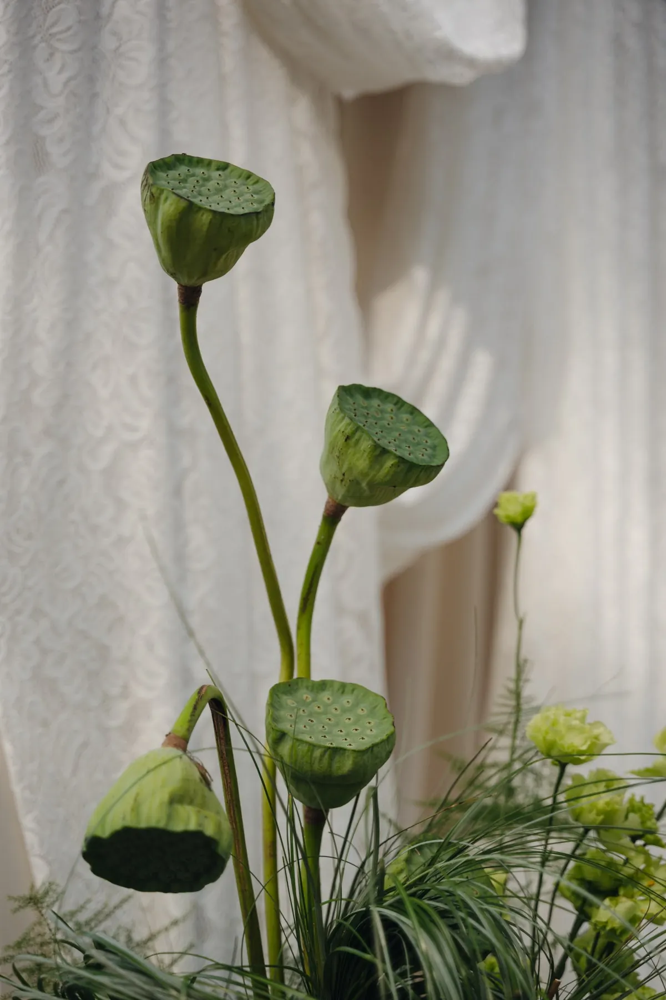
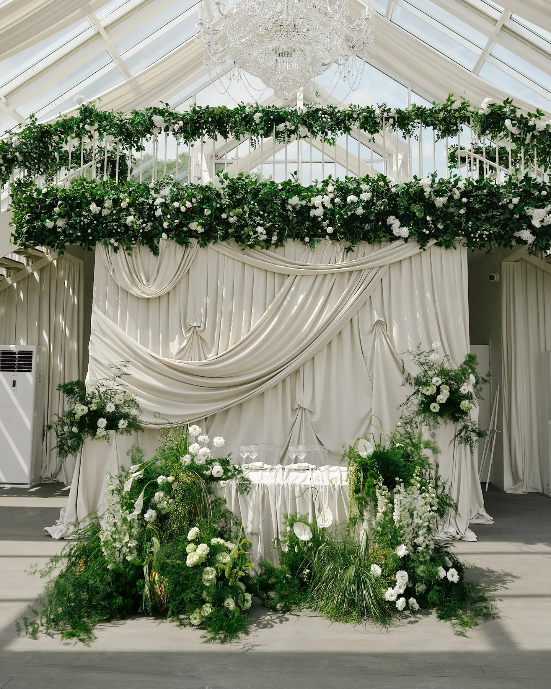
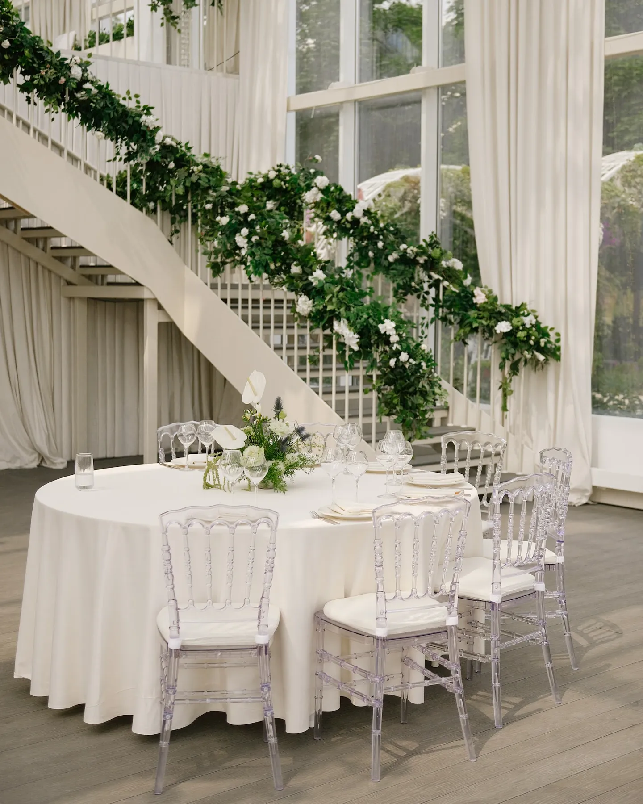

Зелень — самый недооценённый материал в декоре. Она добавляет объём, фактуру, свежесть и делает композиции живыми. Иногда зелень решает больше, чем цветы. Разбираем, где её использовать и как с ней работать, на примерах наших свадеб.
Что даёт зелень
- Объём. Зелень набирает массу и форму: композиции выглядят пышными и естественными.
- Фактуру. Листья, травы, ветки, коробочки лотоса — разные формы создают графику и глубину.
- Фон для цветов. На зелени цветные и белые цветы читаются ярче.
- Ощущение сада. Даже в лофте или зале зелень создаёт «живую» атмосферу.


Где использовать
- Гирлянды. Над президиумом, на лестнице, вдоль длинного стола. В свадьбе «Белый сад под стеклом» лестница зала увита живой гирляндой.
- Напольные композиции. Травы, листва и несколько цветов у президиума или арки.
- Арка. Зелёная основа, на которой держатся цветы. Подробнее — в статье про свадебную арку.
- Столы. Лёгкие композиции с зеленью и небольшим числом цветов.


С чем сочетать
С белыми цветами — самое надёжное решение; подробнее в статье про свадьбу в зелёном цвете. С драпировкой — зелень на фоне светлой ткани смотрится особенно красиво. Со свечами — вечером тёплый свет делает зелень глубже. Про свечи — в статье про свечи на свадьбу.
Что учесть
Живая зелень любит воду и тень, а на жаре быстро вянет, поэтому её монтируют ближе ко времени начала. Крупные гирлянды требуют креплений — согласуйте с площадкой, где их можно закрепить. Если зелень идёт рядом со свечами, нужна дистанция и стеклянные подсвечники.
Совет: не бойтесь «неидеальной» зелени. Естественные ветки и травы выглядят живее, чем идеально ровные листья.
Как заказать
Расскажите о площадке и стиле — предложим, как использовать зелень, и посчитаем смету.
Частые вопросы
Можно ли сделать свадьбу только из зелени, без цветов?
Да, если важны фактуры и объём: листва, травы, ветки и свет создают цельный образ. Часто добавляют несколько цветов для акцента.
Как долго держится живая зелень?
Зависит от вида и условий. Зелень монтируют ближе ко времени начала и обеспечивают ей воду и тень.
Дешевле ли зелень, чем цветы?
Зелень помогает набрать объём без большого числа цветов. Точную смету считаем под вашу площадку и идею.